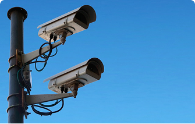
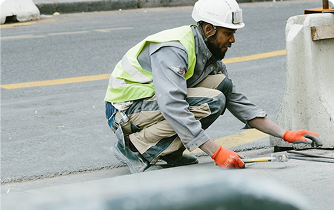
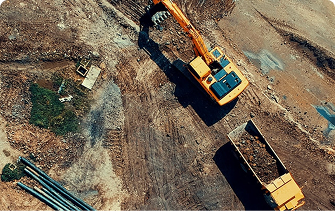

Meta 1 - Wi-Fi Público
Implementação de pontos de Wi-Fi público em áreas estratégicas da cidade
Meta 2 - Infraestrutura de TIC
Modernização da infraestrutura de tecnologia da informação

Meta 3 - Videomonitoramento
Sistema de câmeras para segurança pública

Meta 4 - Software para Gestão de Serviços Públicos
Sistema integrado para gestão municipal

Meta 5 - Software para Gestão de Frotas
Otimização da frota de veículos municipais
Meta 6 - PDTIC
Plano Diretor de Tecnologia da Informação e Comunicação